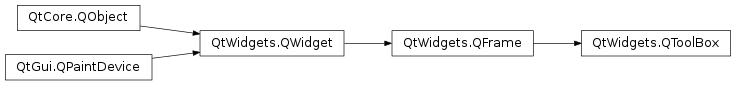

QToolBox¶
Synopsis¶
Functions¶
- def
addItem(widget, icon, text) - def
addItem(widget, text) - def
count() - def
currentIndex() - def
currentWidget() - def
indexOf(widget) - def
insertItem(index, widget, icon, text) - def
insertItem(index, widget, text) - def
isItemEnabled(index) - def
itemIcon(index) - def
itemText(index) - def
itemToolTip(index) - def
removeItem(index) - def
setItemEnabled(index, enabled) - def
setItemIcon(index, icon) - def
setItemText(index, text) - def
setItemToolTip(index, toolTip) - def
widget(index)
Virtual functions¶
- def
itemInserted(index) - def
itemRemoved(index)
Slots¶
- def
setCurrentIndex(index) - def
setCurrentWidget(widget)
Signals¶
- def
currentChanged(index)
Detailed Description¶
The
PySide2.QtWidgets.QToolBoxclass provides a column of tabbed widget items.A toolbox is a widget that displays a column of tabs one above the other, with the current item displayed below the current tab. Every tab has an index position within the column of tabs. A tab’s item is a
PySide2.QtWidgets.QWidget.Each item has an
PySide2.QtWidgets.QToolBox.itemText(), an optionalPySide2.QtWidgets.QToolBox.itemIcon(), an optionalPySide2.QtWidgets.QToolBox.itemToolTip(), and aPySide2.QtWidgets.QToolBox.widget(). The item’s attributes can be changed withPySide2.QtWidgets.QToolBox.setItemText(),PySide2.QtWidgets.QToolBox.setItemIcon(), andPySide2.QtWidgets.QToolBox.setItemToolTip(). Each item can be enabled or disabled individually withPySide2.QtWidgets.QToolBox.setItemEnabled().Items are added using
PySide2.QtWidgets.QToolBox.addItem(), or inserted at particular positions usingPySide2.QtWidgets.QToolBox.insertItem(). The total number of items is given byPySide2.QtWidgets.QToolBox.count(). Items can be deleted with delete, or removed from the toolbox withPySide2.QtWidgets.QToolBox.removeItem(). CombiningPySide2.QtWidgets.QToolBox.removeItem()andPySide2.QtWidgets.QToolBox.insertItem()allows you to move items to different positions.The index of the current item widget is returned by
PySide2.QtWidgets.QToolBox.currentIndex(), and set withPySide2.QtWidgets.QToolBox.setCurrentIndex(). The index of a particular item can be found usingPySide2.QtWidgets.QToolBox.indexOf(), and the item at a given index is returned by item().The
PySide2.QtWidgets.QToolBox.currentChanged()signal is emitted when the current item is changed.See also
-
class
PySide2.QtWidgets.QToolBox([parent=nullptr[, f=Qt.WindowFlags()]])¶ Parameters: - f –
PySide2.QtCore.Qt.WindowFlags - parent –
PySide2.QtWidgets.QWidget
Constructs a new toolbox with the given
parentand the flags,f.- f –
-
PySide2.QtWidgets.QToolBox.addItem(widget, text)¶ Parameters: - widget –
PySide2.QtWidgets.QWidget - text – unicode
Return type: PySide2.QtCore.intThis is an overloaded function.
Adds the widget
win a new tab at bottom of the toolbox. The new tab’s text is set totext. Returns the new tab’s index.- widget –
-
PySide2.QtWidgets.QToolBox.addItem(widget, icon, text) Parameters: - widget –
PySide2.QtWidgets.QWidget - icon –
PySide2.QtGui.QIcon - text – unicode
Return type: PySide2.QtCore.intAdds the
widgetin a new tab at bottom of the toolbox. The new tab’s text is set totext, and theiconSetis displayed to the left of thetext. Returns the new tab’s index.- widget –
-
PySide2.QtWidgets.QToolBox.count()¶ Return type: PySide2.QtCore.int
-
PySide2.QtWidgets.QToolBox.currentChanged(index)¶ Parameters: index – PySide2.QtCore.int
-
PySide2.QtWidgets.QToolBox.currentIndex()¶ Return type: PySide2.QtCore.int
-
PySide2.QtWidgets.QToolBox.currentWidget()¶ Return type: PySide2.QtWidgets.QWidgetReturns a pointer to the current widget, or 0 if there is no such item.
-
PySide2.QtWidgets.QToolBox.indexOf(widget)¶ Parameters: widget – PySide2.QtWidgets.QWidgetReturn type: PySide2.QtCore.intReturns the index of
widget, or -1 if the item does not exist.
-
PySide2.QtWidgets.QToolBox.insertItem(index, widget, icon, text)¶ Parameters: - index –
PySide2.QtCore.int - widget –
PySide2.QtWidgets.QWidget - icon –
PySide2.QtGui.QIcon - text – unicode
Return type: PySide2.QtCore.intInserts the
widgetat positionindex, or at the bottom of the toolbox ifindexis out of range. The new item’s text is set totext, and theiconis displayed to the left of thetext. Returns the new item’s index.- index –
-
PySide2.QtWidgets.QToolBox.insertItem(index, widget, text) Parameters: - index –
PySide2.QtCore.int - widget –
PySide2.QtWidgets.QWidget - text – unicode
Return type: PySide2.QtCore.intThis is an overloaded function.
Inserts the
widgetat positionindex, or at the bottom of the toolbox ifindexis out of range. The new item’s text is set totext. Returns the new item’s index.- index –
-
PySide2.QtWidgets.QToolBox.isItemEnabled(index)¶ Parameters: index – PySide2.QtCore.intReturn type: PySide2.QtCore.boolReturns
trueif the item at positionindexis enabled; otherwise returnsfalse.
-
PySide2.QtWidgets.QToolBox.itemIcon(index)¶ Parameters: index – PySide2.QtCore.intReturn type: PySide2.QtGui.QIconReturns the icon of the item at position
index, or a null icon ifindexis out of range.
-
PySide2.QtWidgets.QToolBox.itemInserted(index)¶ Parameters: index – PySide2.QtCore.intThis virtual handler is called after a new item was added or inserted at position
index.
-
PySide2.QtWidgets.QToolBox.itemRemoved(index)¶ Parameters: index – PySide2.QtCore.intThis virtual handler is called after an item was removed from position
index.
-
PySide2.QtWidgets.QToolBox.itemText(index)¶ Parameters: index – PySide2.QtCore.intReturn type: unicode Returns the text of the item at position
index, or an empty string ifindexis out of range.
-
PySide2.QtWidgets.QToolBox.itemToolTip(index)¶ Parameters: index – PySide2.QtCore.intReturn type: unicode Returns the tooltip of the item at position
index, or an empty string ifindexis out of range.
-
PySide2.QtWidgets.QToolBox.removeItem(index)¶ Parameters: index – PySide2.QtCore.intRemoves the item at position
indexfrom the toolbox. Note that the widget is not deleted.
-
PySide2.QtWidgets.QToolBox.setCurrentIndex(index)¶ Parameters: index – PySide2.QtCore.int
-
PySide2.QtWidgets.QToolBox.setCurrentWidget(widget)¶ Parameters: widget – PySide2.QtWidgets.QWidgetMakes``widget`` the current widget. The
widgetmust be an item in this tool box.
-
PySide2.QtWidgets.QToolBox.setItemEnabled(index, enabled)¶ Parameters: - index –
PySide2.QtCore.int - enabled –
PySide2.QtCore.bool
If
enabledis true then the item at positionindexis enabled; otherwise the item at positionindexis disabled.- index –
-
PySide2.QtWidgets.QToolBox.setItemIcon(index, icon)¶ Parameters: - index –
PySide2.QtCore.int - icon –
PySide2.QtGui.QIcon
Sets the icon of the item at position
indextoicon.- index –
-
PySide2.QtWidgets.QToolBox.setItemText(index, text)¶ Parameters: - index –
PySide2.QtCore.int - text – unicode
Sets the text of the item at position
indextotext.If the provided text contains an ampersand character (‘&’), a mnemonic is automatically created for it. The character that follows the ‘&’ will be used as the shortcut key. Any previous mnemonic will be overwritten, or cleared if no mnemonic is defined by the text. See the
QShortcutdocumentation for details (to display an actual ampersand, use ‘&&’).- index –
-
PySide2.QtWidgets.QToolBox.setItemToolTip(index, toolTip)¶ Parameters: - index –
PySide2.QtCore.int - toolTip – unicode
Sets the tooltip of the item at position
indextotoolTip.- index –
-
PySide2.QtWidgets.QToolBox.widget(index)¶ Parameters: index – PySide2.QtCore.intReturn type: PySide2.QtWidgets.QWidgetReturns the widget at position
index, or 0 if there is no such item.
© 2018 The Qt Company Ltd. Documentation contributions included herein are the copyrights of their respective owners. The documentation provided herein is licensed under the terms of the GNU Free Documentation License version 1.3 as published by the Free Software Foundation. Qt and respective logos are trademarks of The Qt Company Ltd. in Finland and/or other countries worldwide. All other trademarks are property of their respective owners.